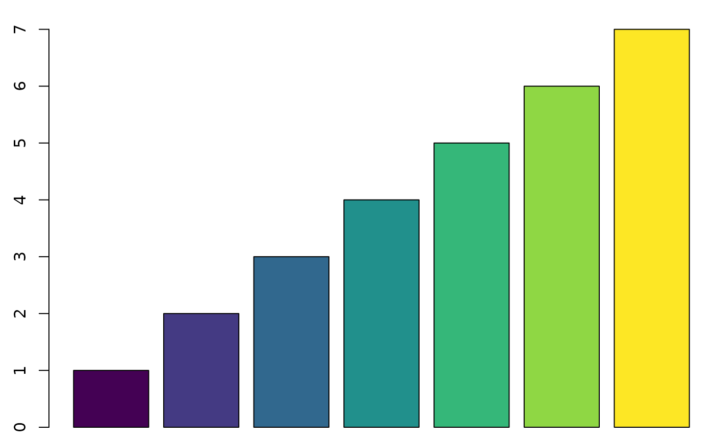
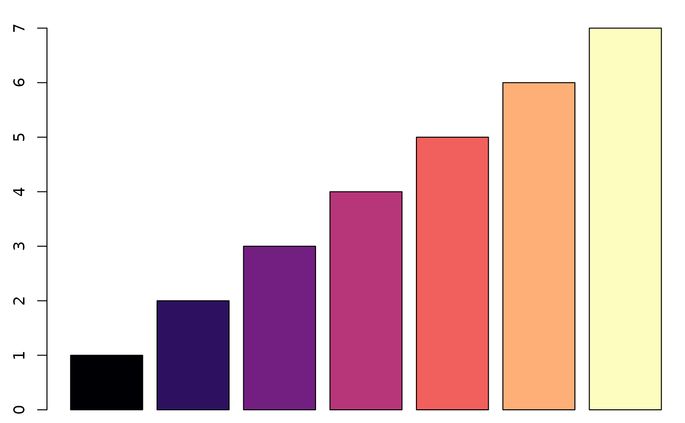
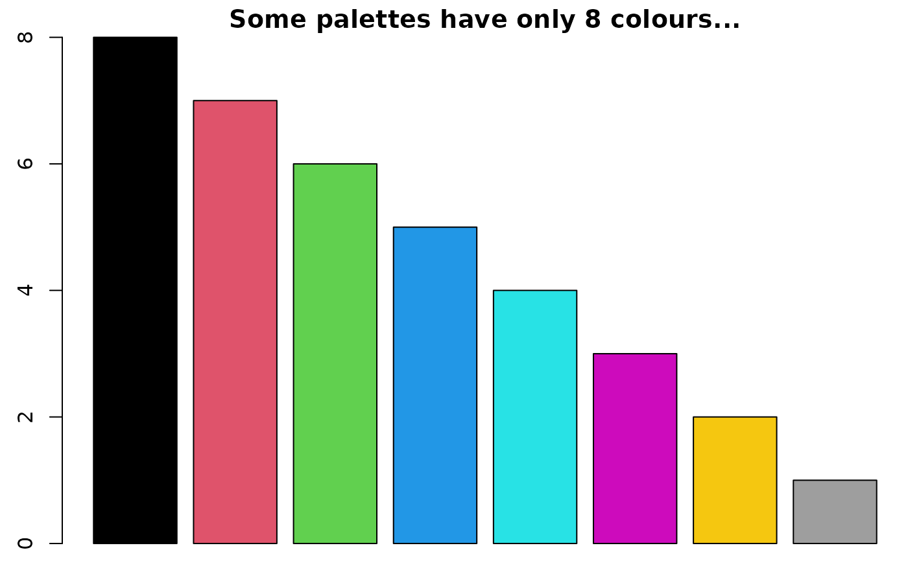
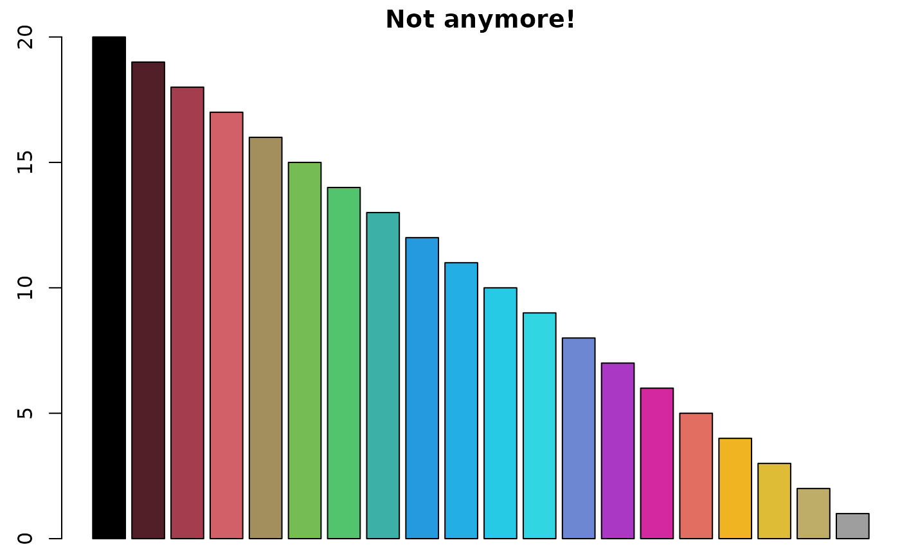
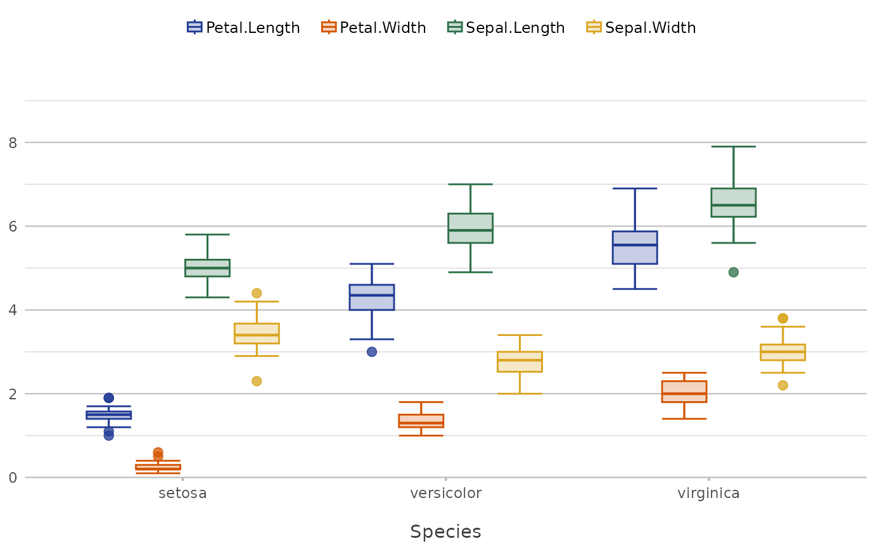
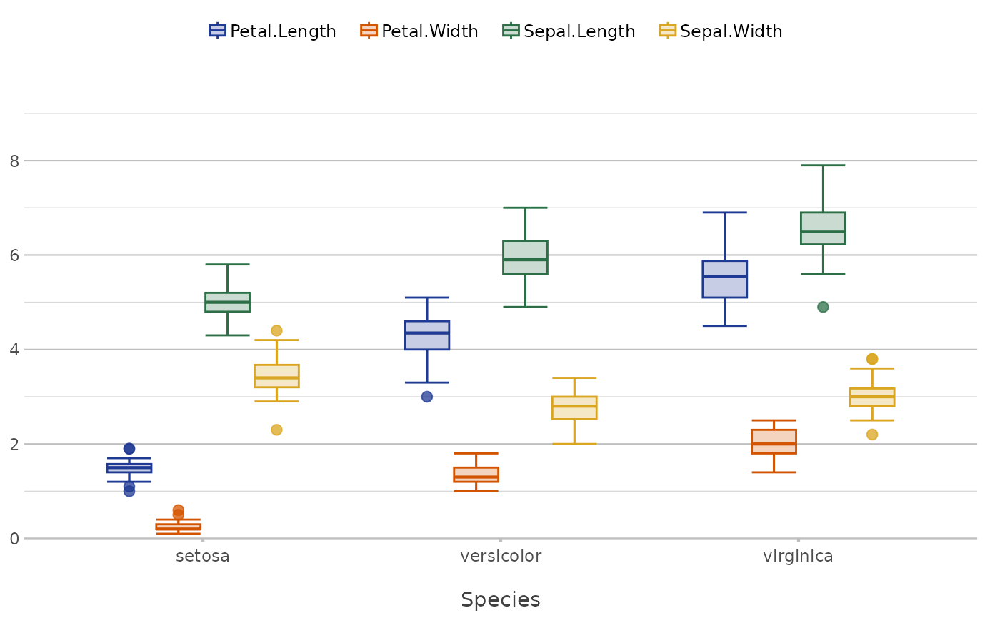

Colours from R, viridis and more. The output prints in the console with the actual colours.
colour(x, length = 1, opacity = 0)
register_colour(...)
# S3 method for class 'colour'
as.character(x, ...)
# S3 method for class 'colour'
print(x, ...)
add_white(x, white)colour or colour palette name. Input can be:
One of the colourblind-safe viridisLite palettes:
"viridis"
"magma"
"inferno"
"plasma"
"cividis"
"rocket"
"mako"
"turbo"
One of the built-in palettes in R (these are from R 4.4.1):
"Accent"
"Alphabet"
"Classic Tableau"
"Dark 2"
"Okabe-Ito"
"Paired"
"Pastel 1"
"Pastel 2"
"Polychrome 36"
"R3"
"R4"
"Set 1"
"Set 2"
"Set 3"
"Tableau 10"
"ggplot2"
"grayscale"
"greyscale"
"heatmap"
"rainbow"
"terrain"
"topo"
One of the 657 built-in colours() in R, such as "blue2", "darkgoldenrod3", "darkolivegreen3", "darkorange", "violetred1"
One of the pre-registered colours using register_colour()
size of the vector to be returned
amount of opacity (0 = solid, 1 = transparent)
named vectors with known, valid colours. They must be coercible with colour().
number between [0, 1] to add white to x
character vector in HTML format (i.e., "#AABBCC") with new class colour
A palette from R will be expanded where needed, so even colour("R4", length = 20) will work, despite "R4" only supporting a maximum of eight colours.
colour(c("red", "tan1", "#ffa", "FFAA00"))
#> [1] "#FF0000" "#FFA54F" "#FFFFAA" "#FFAA00"
par(mar = c(0.5, 2.5, 1.5, 0)) # set plot margins for below plots
# all colourblind-safe colour palettes from the famous viridisLite package
barplot(1:7,
col = colour("viridis", 7))

barplot(1:7,
col = colour("magma", 7))

barplot(8:1,
col = colour("R4", 8),
main = "Some palettes have only 8 colours...")

barplot(20:1,
col = colour("R4", 20),
main = "Not anymore!")
#> ! Colour palette expanded using grDevices::colorRampPalette()

# Registering Colours --------------------------------------------------
# to register colours, use named input - the values will be evaluated
# with colour()
colour("red123")
#> Warning: Invalid colours, replacing with grey: red123
#> [1] "#919191"
register_colour(red123 = "red", red456 = "#ff0000", red789 = "f00")
#> 3 colours registered.
colour("red123")
#> [1] "#FF0000"
colour("red456")
#> [1] "#FF0000"
colour("red789")
#> [1] "#FF0000"
# you can also register a group name
register_colour(red_group = c("red123", "ff4400", "red3", "red4"))
#> 1 colour registered.
colour("red_group")
#> [1] "#FF0000"
colour("red_group", 3)
#> [1] "#FF0000" "#FF4400" "#CD0000"
# Registering colours is ideal for your (organisational) style in plots.
# Let's say these are your style:
register_colour(navy_blue = "#1F3A93",
burnt_orange = "#D35400",
forest_green = "#2C6F47",
goldenrod_yellow = "#DAA520",
slate_grey = "#708090",
plum_purple = "#8E4585")
#> 6 colours registered.
# Then register the whole colour list too:
register_colour(my_organisation = c("navy_blue", "burnt_orange",
"forest_green", "goldenrod_yellow",
"slate_grey", "plum_purple"))
#> 1 colour registered.
# Check that it works:
colour("my_organisation", length = 6)
#> [1] "#1F3A93" "#D35400" "#2C6F47" "#DAA520" "#708090" "#8E4585"
# Now use it in plots as you like:
iris |>
plot2(x = Species, y = where(is.double), colour = "my_organisation")
#> i Using y = c(Petal.Length, Petal.Width, Sepal.Length, Sepal.Width)
#> i Using type = "boxplot" since all groups in Species and category contain at least three values

# Or even set the option to use it in any future plot:
options(plot2.colour = "my_organisation")
iris |>
plot2(x = Species, y = where(is.double))
#> i Using y = c(Petal.Length, Petal.Width, Sepal.Length, Sepal.Width)
#> i Using type = "boxplot" since all groups in Species and category contain at least three values

options(plot2.colour = NULL)
# Use add_white() to add white to existing colours:
colours <- colour("R4", 6)
colours
#> [1] "#000000" "#DF536B" "#61D04F" "#2297E6" "#28E2E5" "#CD0BBC"
add_white(colours, 0.25)
#> [1] "#3F3F3F" "#E77E90" "#88DB7B" "#59B1EC" "#5DE9EB" "#D948CC"
add_white(colours, 0.5)
#> [1] "#7F7F7F" "#EFA9B5" "#B0E7A7" "#90CBF2" "#93F0F2" "#E685DD"
add_white(colours, 0.75)
#> [1] "#BFBFBF" "#F7D4DA" "#D7F3D3" "#C7E5F8" "#C9F7F8" "#F2C2EE"
add_white("red", 1/128)
#> [1] "#FF0202"
add_white("red", 1/64)
#> [1] "#FF0404"
add_white("red", 1/32)
#> [1] "#FF0808"